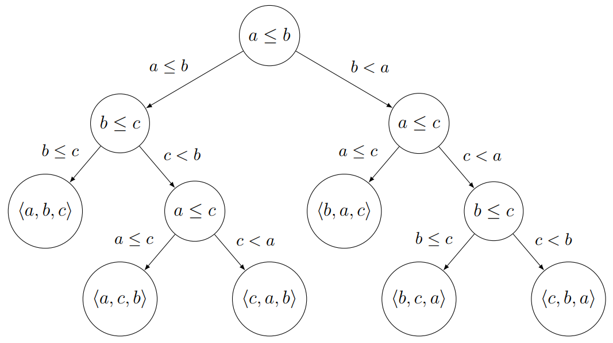

Összehasonlításon alapuló rendezések:
Az eddigi rendezések összehasonlító rendezések voltak. Bármely összehasonlító
algoritmusnak a legrosszabb esetben $\Omega (n \cdot log \space n)$ összehasonlításra van szüksége $n$
elem
rendezéséhez.
Döntési fa modell:
Az összehasonlító rendezéseket döntési fákkal modellezzük. A döntési fa egy adott
elemű bemenet rendezése során történt összehasonlításokat ábrázoló bináris fa.

A rendezendő számokat kulcsoknak is szokás nevezni. A döntési fa belső csúcsaiban
vannak a kulcs összehasonlítások, leveleiben a rendezés eredményeként adódó lehetséges sorozatok. Az
$n$
elemű bemenetnek mind az $n!$ permutációja meg kell jelenjen egy-egy levélen, azaz a döntési fának
legalább $n!$ levele van.
A fa gyökerét és legtávolabbi levelét összekötő út hossza adja meg azoknak az
összehasonlításoknak a számát, melyeket a rendezőalgoritmus a legrosszabb esetben végez.
Lineáris idejű rendezések:
Ezek a rendezések nem kulcsösszehasonlításokkal rendeznek, hanem
osztályozzák a
kulcsokat. Egyes rendezések, viszont használnak kulcsösszehasonlító segédrendezéseket.
Radix rendezés:
A kulcsok $r$ alapú számrendszerben felírt, $d$ számjegyű,
előjel nélküli
egész
számok. Ez lesz a $dDigitNumber$ típus. Ha kell vezető nullákat írunk a számok elé,
hogy $d$
számjegyű legyen.
|
$i := 1 \space to \space d$ |
| stable sort on digit $i$ |
A kulcsok számjegyeit a legkevésbé fontos (jobb szélső) számjegytől a
legfontosabb
(bal szélső) számjegyig minden helyiérték szerint rendezzük egymás után egy stabil
rendezéssel.
Azért
fontos, hogy stabil rendezés legyen, mert az $i$-edik számjegy szerinti rendezésnél, azonos
számjegyek
esetén meg kell őrizni a rendezettséget. A hatékonyság miatt fontos, hogy lineáris időben
rendezzenek.
A szétválogató rendezés (distributing sort) láncolt listák számjegy szerinti
rendezésére, míg a leszámláló rendezés (counting sort) tömbök rendezésére alkalmas.
Műveletigény:
Ez $\Theta (d \cdot rendezés(n))$ költségű, ahol a $rendezés(n)$ a belső rendezésünk
költsége.
Gyakorlati alkalmazása:
Néha használják a radix rendezést összetett kulcsú rekordok rendezésére. Ilyen
összetett kulcs például a dátum, ami három komponenst (év, hó, nap) tartalmaz.